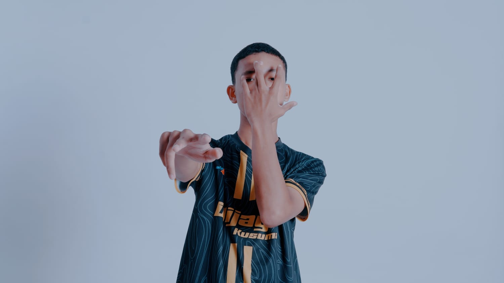

| NAMA | Mochamad Saiful Rizal |
|---|---|
| TANGGAL LAHIR | 25 MARET 2007 |
| SEKOLAH | SMK TUNAS HARAPAN PATI |
| KELAS | X-TJKT 4 |
| PRESENSI | 19 |
| ALAMAT | Keben,Tambakromo,Pati |
| JENIS KELAMIN | Laki-Laki |
| HOBI | Football |
| AGAMA | ISLAM |
| IG SAYA | |
| FOTO |  |
Hantu ada di mana-mana. Barangkali juga ada dihatimu,hati semua orang yang selalu cemas,gemetar, berkeringat dingin, saat malam datang dengan kesunyian mencekam. Boleh percaya boleh tidak, hantu banyak bersemayam di tempat-tempat angker. Barangkali juga di hatimu,hati semua orang yang jauh dari Tuhan. Memang, perkembangan zaman yang semakin modern seperti saat ini, sudah mulai banyak kalangan yang seolah tidak percaya dengan semua hal yang berbau mistis atau hantu. Namun, percayalah, kehidupan kita sebagai manusia diciptakan hidup berdampingan dengan alam mereka. Buku ini berisi kumpulan kisah-kisah horor mencekam yang dialami oleh seseorang di berbagai tempat. Ada banyak kisah horor mencekam yang diceritakan dalam buku ini yang akan membuat kalian bergidik ngeri.Ah, jangan-jangan ada hantu juga di hati kalian. Nah, makanya sebelum menyelami lorong-lorong horor di buku ini, sebaiknya kalian siapkan nyali keberanian terlebih dulu.